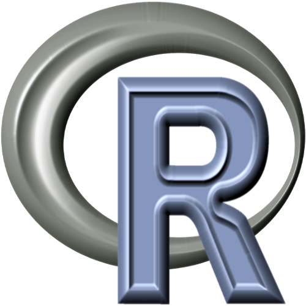

Python é uma linguagem de uso geral, que pode ser utilizada para diversas aplicações. Apresenta uma sintaxe simples, tornando os programas mais legíveis, o que também facilita o aprendizado da linguagem. Possui listas, dicionários e tuplas como estruturas de dados pré-definidas.O Java é uma linguagem de programação orientada a objetos e é uma das linguagens mais utilizadas pelas empresas na atualidade no desenvolvimento de aplicações WEB e Mobile. O Java foi criado em 1995 na empresa Sun Microsystem por uma equipe chefiada por James Gosling, conhecido como o pai do Java.O C# (leia-se C-Sharp), é uma linguagem de programação orientada a objetos, que foi desenvolvida pela Microsoft e faz parte da plataforma . NET. Embora a linguagem C# tenha sido criada do zero, foi baseada na linguagem C++ e tem muitos elementos da linguagem Pascal e Java.

R é uma linguagem de programação multi-paradigma orientada a objetos, programação funcional, dinâmica, fracamente tipada, voltada à manipulação, análise e visualização de dados. Foi criado originalmente por Ross Ihaka e por Robert Gentleman no departamento de Estatística da Universidade de Auckland, Nova Zelândia.